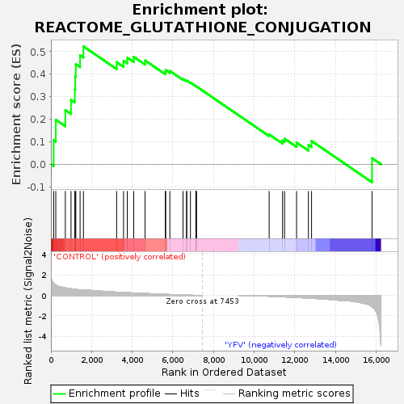
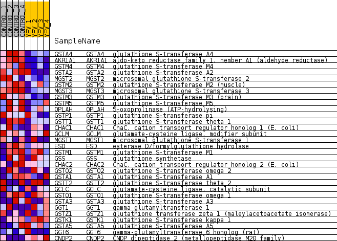
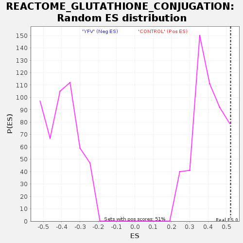

| Dataset | MATRIZ_GSE99081_collapsed_to_symbols.gsea_CLASE_99081.cls#CONTROL_versus_YFV |
| Phenotype | gsea_CLASE_99081.cls#CONTROL_versus_YFV |
| Upregulated in class | CONTROL |
| GeneSet | REACTOME_GLUTATHIONE_CONJUGATION |
| Enrichment Score (ES) | 0.5231518 |
| Normalized Enrichment Score (NES) | 1.3267496 |
| Nominal p-value | 0.04483431 |
| FDR q-value | 0.96959573 |
| FWER p-Value | 1.0 |

| SYMBOL | TITLE | RANK IN GENE LIST | RANK METRIC SCORE | RUNNING ES | CORE ENRICHMENT | |
|---|---|---|---|---|---|---|
| 1 | GSTA4 | glutathione S-transferase A4 | 136 | 1.188 | 0.1066 | Yes |
| 2 | AKR1A1 | aldo-keto reductase family 1, member A1 (aldehyde reductase) | 240 | 1.009 | 0.1979 | Yes |
| 3 | GSTM4 | glutathione S-transferase M4 | 710 | 0.739 | 0.2405 | Yes |
| 4 | GSTA2 | glutathione S-transferase A2 | 989 | 0.647 | 0.2860 | Yes |
| 5 | MGST2 | microsomal glutathione S-transferase 2 | 1175 | 0.601 | 0.3327 | Yes |
| 6 | GSTM2 | glutathione S-transferase M2 (muscle) | 1195 | 0.594 | 0.3891 | Yes |
| 7 | MGST3 | microsomal glutathione S-transferase 3 | 1227 | 0.590 | 0.4442 | Yes |
| 8 | GSTM3 | glutathione S-transferase M3 (brain) | 1435 | 0.543 | 0.4841 | Yes |
| 9 | GSTM5 | glutathione S-transferase M5 | 1600 | 0.508 | 0.5232 | Yes |
| 10 | OPLAH | 5-oxoprolinase (ATP-hydrolysing) | 3233 | 0.317 | 0.4531 | No |
| 11 | GSTP1 | glutathione S-transferase pi | 3572 | 0.281 | 0.4595 | No |
| 12 | GSTT1 | glutathione S-transferase theta 1 | 3758 | 0.261 | 0.4733 | No |
| 13 | CHAC1 | ChaC, cation transport regulator homolog 1 (E. coli) | 4074 | 0.237 | 0.4769 | No |
| 14 | GCLM | glutamate-cysteine ligase, modifier subunit | 4633 | 0.189 | 0.4607 | No |
| 15 | MGST1 | microsomal glutathione S-transferase 1 | 5627 | 0.104 | 0.4095 | No |
| 16 | ESD | esterase D/formylglutathione hydrolase | 5648 | 0.102 | 0.4182 | No |
| 17 | GSTM1 | glutathione S-transferase M1 | 5851 | 0.088 | 0.4142 | No |
| 18 | GSS | glutathione synthetase | 6499 | 0.038 | 0.3780 | No |
| 19 | CHAC2 | ChaC, cation transport regulator homolog 2 (E. coli) | 6672 | 0.028 | 0.3701 | No |
| 20 | GSTO2 | glutathione S-transferase omega 2 | 6682 | 0.027 | 0.3722 | No |
| 21 | GSTA1 | glutathione S-transferase A1 | 6864 | 0.017 | 0.3627 | No |
| 22 | GSTT2 | glutathione S-transferase theta 2 | 7132 | 0.004 | 0.3466 | No |
| 23 | GCLC | glutamate-cysteine ligase, catalytic subunit | 7134 | 0.004 | 0.3469 | No |
| 24 | GSTO1 | glutathione S-transferase omega 1 | 7166 | 0.002 | 0.3451 | No |
| 25 | GSTA3 | glutathione S-transferase A3 | 10736 | -0.079 | 0.1325 | No |
| 26 | GGT1 | gamma-glutamyltransferase 1 | 11395 | -0.138 | 0.1053 | No |
| 27 | GSTZ1 | glutathione transferase zeta 1 (maleylacetoacetate isomerase) | 11494 | -0.147 | 0.1135 | No |
| 28 | GSTK1 | glutathione S-transferase kappa 1 | 12084 | -0.201 | 0.0966 | No |
| 29 | GSTA5 | glutathione S-transferase A5 | 12668 | -0.261 | 0.0860 | No |
| 30 | GGT6 | gamma-glutamyltransferase 6 homolog (rat) | 12822 | -0.280 | 0.1036 | No |
| 31 | CNDP2 | CNDP dipeptidase 2 (metallopeptidase M20 family) | 15796 | -1.107 | 0.0273 | No |

